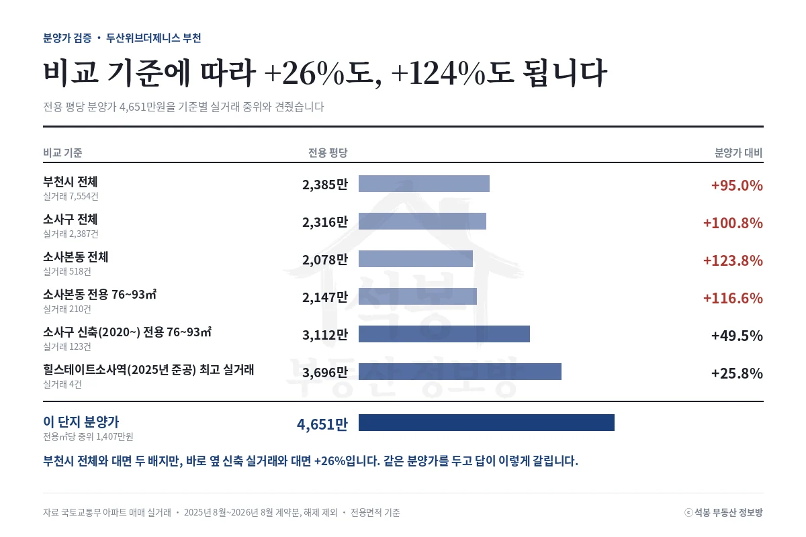
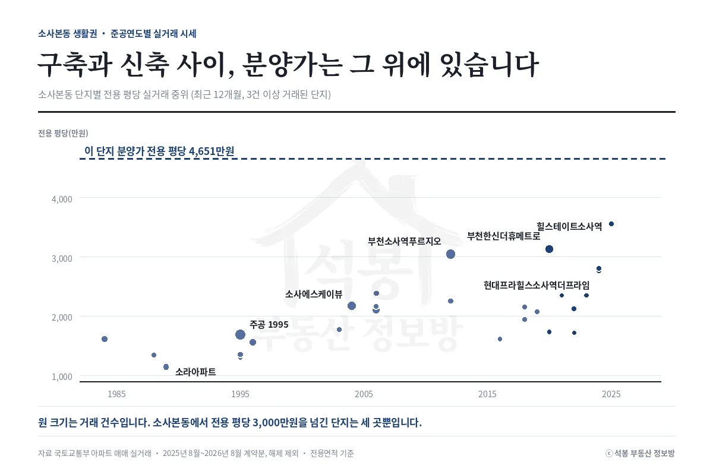
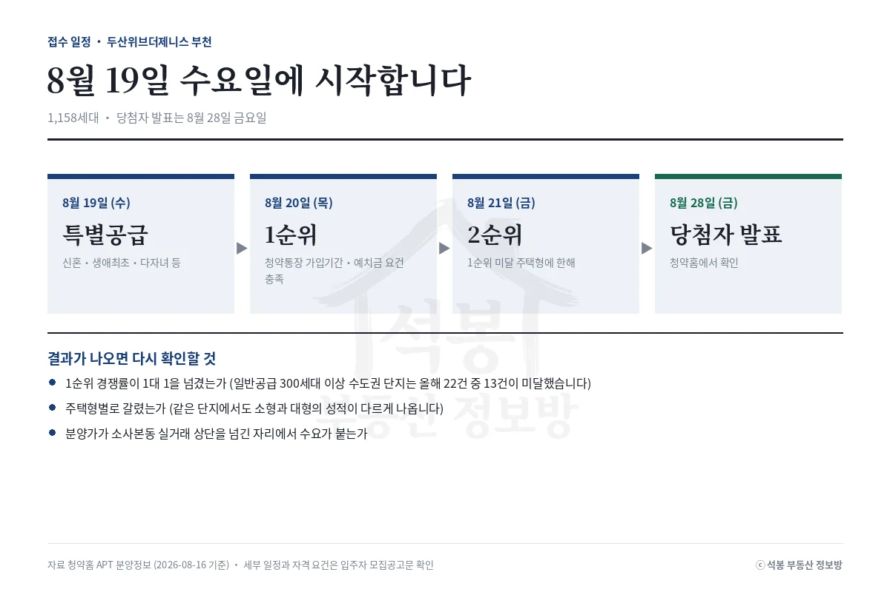

두산위브더제니스 부천이 8월 19일 특별공급을 시작합니다. 분양가는 8.64억에서 11.82억, 전용 평당 4,651만원입니다. 부천시 전체 실거래 중위와 대면 95.0% 높고, 바로 옆 신축이 실제로 팔린 값과 대면 25.8% 높습니다. 같은 분양가를 두고 답이 이렇게 갈립니다.
소사본동은 1호선 소사역과 서해선이 만나는 자리입니다. 부천 안에서는 중동·상동 같은 신도시 축이 아니라 원도심 쪽에 가깝고, 1980~1990년대 아파트가 많이 남아 있습니다. 그 위에 최근 몇 년 사이 신축이 하나씩 들어서는 중입니다.
여기서부터는 회원에게 보여드립니다
카카오 로그인 3초면 전문을 읽을 수 있습니다. 무료입니다.
가입하시면 지역 시장조사 보고서(약식)를 2회 무료로 요청하실 수 있습니다.
이미 회원이면 같은 버튼으로 로그인만 됩니다
분양가 검증: 무엇과 비교하느냐에 따라 답이 갈립니다
분양가가 비싼지 싼지는 숫자 하나로는 알 수 없습니다. 비교 대상을 어디까지 좁히느냐에 따라 결론이 뒤집힙니다. 최근 12개월 실거래를 여섯 가지 기준으로 잘라 나란히 놓았습니다.
비교 기준
실거래
전용 평당
분양가 대비
부천시 전체
7,554건
2,385만원
+95.0%
부천 소사구 전체
2,387건
2,316만원
+100.8%
소사본동 전체
518건
2,078만원
+123.8%
소사본동 전용 76~93㎡
210건
2,147만원
+116.6%
소사구 신축(2020년 이후) 전용 76~93㎡ 면적과 연식을 함께 맞춘 값
123건
3,112만원
+49.5%
힐스테이트소사역 최고 실거래 2025년 준공, 소사본동 대표 신축
4건
3,696만원
+25.8%

가장 넓게 보면 부천시 전체 대비 95.0%, 두 배가 넘습니다. 그런데 부천시에는 오정구처럼 전용 평당 1,600만원대 지역이 섞여 있어 이 비교는 사실상 아무것도 말해 주지 않습니다. 동을 소사본동으로 좁히면 오히려 갭이 123.8%로 벌어집니다. 소사본동에 구축이 많기 때문입니다.
면적과 연식을 함께 맞추면 그림이 달라집니다. 소사구에서 2020년 이후 지어진 전용 76~93㎡ 아파트는 전용 평당 3,112만원에 거래됐습니다. 여기까지 좁히면 갭이 49.5%입니다. 같은 동에서 가장 최근에 지어진 힐스테이트소사역이 실제로 팔린 최고가와 대면 25.8%까지 내려옵니다.
같은 동네 실거래를 직접 보면
단지
전용면적
거래금액
전용 평당
계약
힐스테이트소사역 2025년 준공
전용 84.98㎡(25.7평)
9.5억
3,696만원
2026년 2월
부천소사역푸르지오 2012년 준공
전용 122.86㎡(37.0평)
9.95억
2,677만원
2026년 1월
부천소사역푸르지오 2012년 준공
전용 59.92㎡(18.1평)
7.3억
4,027만원
2026년 6월
소사역한라비발디프레스티지 2024년 준공
전용 78.42㎡(23.7평)
6.55억
2,761만원
2025년 8월
부천한신더휴메트로 2020년 준공
전용 59.82㎡(18.1평)
6.25억
3,454만원
2026년 5월
이 표에서 눈에 걸리는 것은 세 번째 줄입니다. 부천소사역푸르지오 전용 59.92㎡(18.1평)가 전용 평당 4,027만원에 팔렸습니다. 같은 단지 122.86㎡(37평)의 평당 2,677만원보다 훨씬 높습니다. 작은 집일수록 평당가가 비싸게 잡히는 구조입니다. 이 단지 분양가 평당 4,651만원은 소사본동에서 가장 비쌌던 그 평당가보다도 15.5% 위에 있습니다.

산점도를 보시면 소사본동에서 전용 평당 3,000만원을 넘긴 단지는 힐스테이트소사역, 부천한신더휴메트로, 부천소사역푸르지오 세 곳뿐입니다. 2024년에 준공한 소사역한라비발디프레스티지도 평당 2,761만원에 머물러 있습니다. 분양가 4,651만원 선은 그보다 한참 위에 있습니다.
절대 금액으로 놓으면 이렇습니다. 소사본동에서 최근 12개월간 가장 비싸게 팔린 집이 부천소사역푸르지오 122.86㎡(37평) 9.95억입니다. 이 단지 분양가 상한 11.82억은 그보다 1.87억 높습니다. 새 아파트값을 동네에 처음 그어 넣는 자리라고 보는 편이 맞습니다.
그래서 어떻게 볼 것인가

넓게 보면 두 배, 좁게 보면 25.8%입니다. 어느 쪽이 맞다고 말하기보다, 이 단지가 소사본동에 없던 가격대를 만드는 중이라는 점을 짚어 두는 편이 정확합니다. 1호선과 서해선이 겹치는 자리라는 점, 그리고 일반공급 물량이 크다는 점이 각각 반대 방향으로 작용할 겁니다. 올해 수도권에서 일반공급 300세대를 넘긴 단지는 22건 중 13건이 미달했습니다.
주택형별 분양가와 자격 요건은 입주자 모집공고문에서 확인하시기 바랍니다. 결과는 8월 28일 발표 이후 데이터로 다시 확인하겠습니다.
원자료: 청약홈 APT 분양정보(공고번호 2026000382, 조회일 2026-08-16) · 국토교통부 아파트 매매 실거래(부천시 2025년 8월~2026년 8월 계약분 7,554건, 해제 제외)
면적·평당 단가는 전용면적 기준, 시세는 중위값 · 분양가는 주택형별 최저~최고이며 층·향에 따라 달라집니다
소사본동 신축은 표본이 적어(2020년 이후 전용 76~93㎡ 12건) 같은 조건 비교는 소사구 단위로 넓혔습니다 · 편집·제작: 석봉 부동산 정보방 · 투자 권유가 아닙니다.